Washable underpads, made in our own workshops.
We make washable, reusable bed underpads, pet pads, chair pads and adult bibs for brands, distributors, care facilities and Amazon sellers. This page shows everything we can supply: factory, product range, materials, colours, sizes and certificates.
 52
52Our production base and workshops
Every pad is made in-house, from laminating the waterproof film to packing the carton.
 101
101 50
50 5152
5152 53
53 54
54 55
55From fabric roll to finished carton
| Laminating | TPU film laminated to the backing fabric; waterproofing checked on every roll |
|---|---|
| Cutting | Automatic cutting tables; size tolerance ±2 cm |
| Quilting | Multi-needle quilting machines; 12 stock patterns or your own |
| Sewing | Double-stitched bias binding, handles, wings and labels |
| Inspection | In-line checks and final inspection to AQL 2.5 |
| Packing | Retail packs, FBA labels, export cartons, weight check on every carton |
Eight underpad styles we supply
Each style can be made in any size and colour, with your label and packaging.
 14
14 58
58 59
59 60
60 61
61Normal style
Our everyday workhorse. A soft brushed polyester top and backing wrap a needle-punched absorbent core and a TPU barrier. Easy to customise in colour and size.
| Top | Soft brushed polyester 90 g/m² (or cotton) |
|---|---|
| Absorbent core | 95% polyester / 5% viscose or 65% / 35%; 200 / 230 / 270 / 340 g/m²; ≈ 200 / 300 / 400 ml per 34 × 36 in pad (Light / Standard / Heavy) |
| Waterproof barrier | TPU film 0.025 mm, 30 g/m²; machine washable 300+ times |
| Backing | Soft brushed polyester 90 g/m², anti-slip |
Sizes: 18 × 24 in to 72 × 72 in, 40 × 60 cm to 90 × 160 cm, or any size · Colours: 8 stock colours, prints or Pantone
Normal style: full page 15
15 65
65 66
66 67
67Cotton surface · PVC backing
For users who prefer the feel of cotton. A cotton top in four weights sits on a soft padding layer and an absorbent soaker, with a waterproof PVC backing protected by an anti-slip knitted fabric.
| Top | Skin-friendly cotton, 100 / 120 / 140 / 180 g/m² |
|---|---|
| Padding | Polyester padding layer |
| Absorbent core | 95% polyester / 5% viscose or 65% / 35%; 200 / 230 / 270 / 340 g/m²; ≈ 200 / 300 / 400 ml per 34 × 36 in pad (Light / Standard / Heavy) |
| Waterproof backing | PVC with anti-slip knitted fabric; machine washable 300+ times |
Sizes: 18 × 24 in to 72 × 72 in, 40 × 60 cm to 90 × 160 cm, or any size · Colours: 8 stock colours, prints or Pantone
Cotton surface · PVC backing: full page 16
16 68
68Bamboo fabric style
A five-layer build. The bamboo top feels cool and smooth, a wadding layer adds softness, and the absorbent core, TPU barrier and anti-slip backing do the protective work.
| Top | Bamboo fabric, cool and smooth to the touch |
|---|---|
| Wadding | Polyester wadding layer |
| Absorbent core | 95% polyester / 5% viscose or 65% / 35%; 200 / 230 / 270 / 340 g/m²; ≈ 200 / 300 / 400 ml per 34 × 36 in pad (Light / Standard / Heavy) |
| Waterproof barrier | TPU film 0.025 mm, 30 g/m²; machine washable 300+ times |
| Backing | Soft brushed polyester, anti-slip |
Sizes: 18 × 24 in to 72 × 72 in, 40 × 60 cm to 90 × 160 cm, or any size · Colours: 8 stock colours, prints or Pantone
Bamboo fabric style: full page 17
17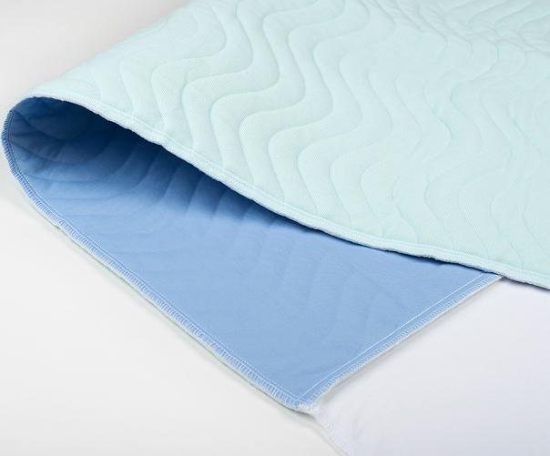
70 71
71Terry cloth style
Terry loops draw liquid away from the skin into the core. Under the terry top: a wadding layer, the absorbent core, the TPU barrier and a stain-resistant anti-slip backing.
| Top | Terry cloth (looped pile) |
|---|---|
| Wadding | Polyester wadding layer |
| Absorbent core | 95% polyester / 5% viscose or 65% / 35%; 200 / 230 / 270 / 340 g/m²; ≈ 200 / 300 / 400 ml per 34 × 36 in pad (Light / Standard / Heavy) |
| Waterproof barrier | TPU film 0.025 mm, 30 g/m²; machine washable 300+ times |
| Backing | Soft brushed polyester, anti-slip |
Sizes: 18 × 24 in to 72 × 72 in, 40 × 60 cm to 90 × 160 cm, or any size · Colours: 8 stock colours, prints or Pantone
Terry cloth style: full page 18
18 72
72 73
73 74
74 75
75Tuck-in style
Built for restless sleepers and bed-bound care. The quilted centre panel absorbs; the long side tails tuck under the mattress so the pad cannot slide or bunch.
| Top | Soft brushed polyester 90 g/m² (or cotton) |
|---|---|
| Absorbent core | 95% polyester / 5% viscose or 65% / 35%; 200 / 230 / 270 / 340 g/m²; ≈ 200 / 300 / 400 ml per 34 × 36 in pad (Light / Standard / Heavy) |
| Waterproof barrier | TPU film 0.025 mm, 30 g/m²; machine washable 300+ times |
| Backing | Soft brushed polyester 90 g/m², anti-slip |
Sizes: 18 × 24 in to 72 × 72 in, 40 × 60 cm to 90 × 160 cm, or any size · Colours: 8 stock colours, prints or Pantone
Tuck-in style: full page 19
19 77
77 78
78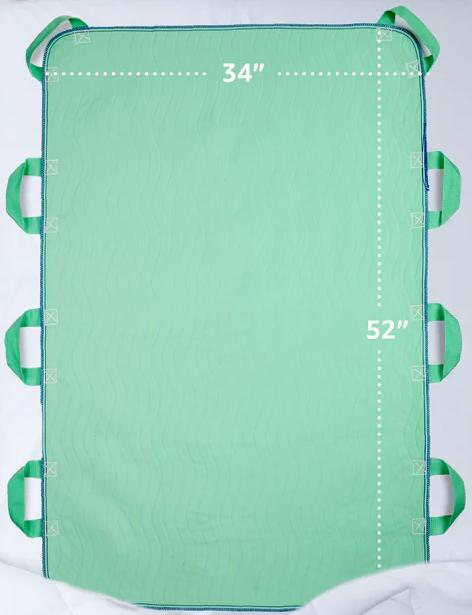
79 80
80Handle style
A care pad that doubles as a positioning aid. Reinforced handles let two carers lift, reposition and turn a person; the pad then lies flat as normal bed protection.
| Top | Soft brushed polyester 90 g/m² (or cotton) |
|---|---|
| Absorbent core | 95% polyester / 5% viscose or 65% / 35%; 200 / 230 / 270 / 340 g/m²; ≈ 200 / 300 / 400 ml per 34 × 36 in pad (Light / Standard / Heavy) |
| Waterproof barrier | TPU film 0.025 mm, 30 g/m²; machine washable 300+ times |
| Backing | Soft brushed polyester 90 g/m², anti-slip |
Sizes: 18 × 24 in to 72 × 72 in, 40 × 60 cm to 90 × 160 cm, or any size · Colours: 8 stock colours, prints or Pantone
Handle style: full page 20
20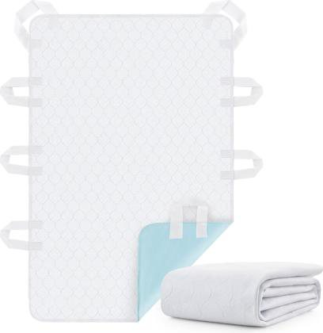
81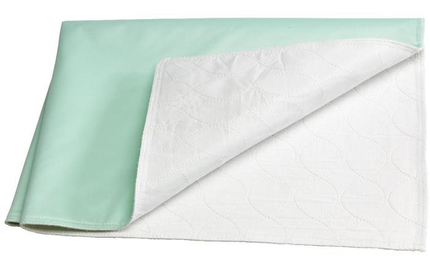
82 83
83 84
84PVC backing style
The value option for high-volume buyers. A brushed polyester or cotton top and absorbent core sit on a fully waterproof PVC barrier, finished with an anti-slip, anti-pilling knitted backing.
| Top | Soft brushed polyester or cotton |
|---|---|
| Absorbent core | 95% polyester / 5% viscose or 65% / 35%; 200 / 230 / 270 / 340 g/m²; ≈ 200 / 300 / 400 ml per 34 × 36 in pad (Light / Standard / Heavy) |
| Waterproof barrier | PVC; machine washable 300+ times |
| Backing | Knitted fabric, anti-slip and anti-pilling |
Sizes: 18 × 24 in to 72 × 72 in, 40 × 60 cm to 90 × 160 cm, or any size · Colours: 8 stock colours, prints or Pantone
PVC backing style: full page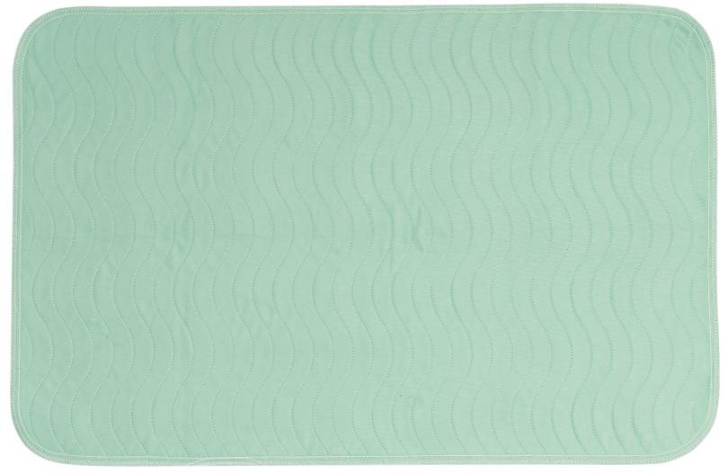
21 85
85 8661
8661Swift Dry style
For high-turnover laundry programmes. A loop-pile top over a heavy 340 g/m² core (≈ 400 ml per 34 × 36 in pad). Strike-through and drying times are measured for your order and stated on the test report.
| Top | Loop-pile fabric 150 g/m² |
|---|---|
| Absorbent core | 65% polyester / 35% viscose, 340 g/m²; ≈ 400 ml per 34 × 36 in pad |
| Waterproof barrier | TPU film 0.025 mm, 30 g/m²; machine washable 300+ times |
| Backing | Soft brushed polyester 90 g/m², anti-slip |
Sizes: 18 × 24 in to 72 × 72 in, 40 × 60 cm to 90 × 160 cm, or any size · Colours: 8 stock colours, prints or Pantone
Swift Dry style: full pageFour layers, each with a job
All styles are built on the same layer system. Choose the material of each layer.
 76
76 5784
5784 64
64 69
69Layer by layer
| 1 · Quilted top | Brushed polyester 90 g/m² · cotton 100–180 g/m² · bamboo · terry · loop-pile 150 g/m² |
|---|---|
| 2 · Absorbent core | Needle-punched polyester / viscose (95/5 or 65/35) · 200 / 230 / 270 / 340 g/m² |
| Capacity | ≈ 200 / 300 / 400 ml per 34 × 36 in pad (Light / Standard / Heavy); test method on the Absorbency page |
| 3 · Waterproof barrier | TPU film 0.025 mm, 30 g/m², breathable and quiet · or PVC |
| 4 · Backing | Brushed polyester 90 g/m², anti-slip · or knitted fabric, anti-pilling |
| Optional | Extra wadding layer (5-layer build), second core for heavy use |
| Edge | Bias binding, double-stitched, rounded corners |
| Durability | 300+ machine washes; 95 °C institutional build available |
Colours, prints, quilting, handles and wings
Top and backing colours can be chosen separately.
 26
26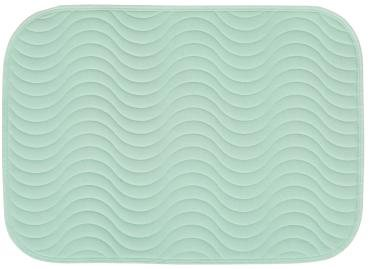
27 28
28 29
29 30
30 31
31 32
32 33
338 stock colours
White, light mint, green, light blue, peach, brown, navy and grey, in stock fabric. Two-tone builds (for example a white top with a blue back) are standard.
| Stock colours | From 500 pcs per size |
|---|---|
| Custom colour | Any Pantone TCX colour, from 1,000 pcs per SKU |
| Two-tone | Top and backing in different colours |
 88
88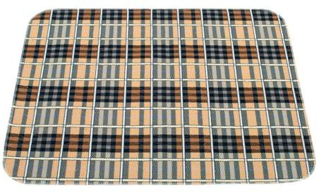
89 90
90 91
91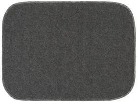
92 93
93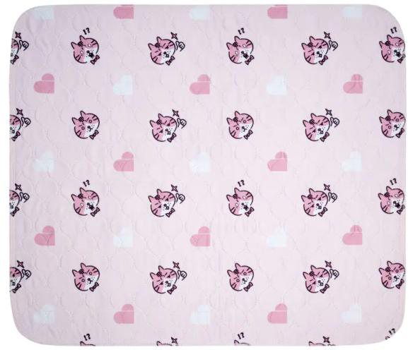
94 102
102Printed designs
Plaids and dark tones hide stains for adults and pets; playful prints suit kids and nurseries. Your own artwork can be printed on the top fabric.
 87
8712 quilting patterns
Wave, diamond, channel, onion, scale and more, or a custom logo quilt. Quilting holds the core in place through hundreds of washes and spreads liquid over a larger area.
78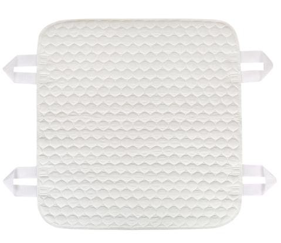
968077Handles for lifting and turning
Reinforced handles turn the pad into a positioning aid: two carers can lift, reposition and turn a person, then the pad lies flat as normal bed protection.
| Handles | 4, 6 or 8 per pad |
|---|---|
| Typical size | 34 × 52 in (86 × 132 cm) with 8 handles; 34 × 36 in with 4 |
| Available on | Handle style VC-PH01, Cotton surface VC-PC01, PVC backing VC-PVC01 |
| Use | Hospitals, care homes, home care beds |
187267Tuck-in wings
Long side tails slide under the mattress so the pad cannot slide or bunch: the most requested feature for restless sleepers and bed-bound care.
| Wings | 2 wings, 46 × 86 cm (18 × 34 in) |
|---|---|
| Typical size | 34 × 36 in or 34 × 52 in centre panel |
| Available on | Tuck-in style VC-PF01, Bamboo VC-PB01, Cotton surface VC-PC01 |
19 standard sizes, or any size
Inches for North America, centimetres for Europe and Japan. Size tolerance ±2 cm.
66Standard formats
Inches: 18 × 24 · 24 × 36 · 30 × 36 · 34 × 36 · 34 × 52 · 34 × 60 · 36 × 60 · 34 × 76 · 36 × 72 · 72 × 72
Centimetres: 40 × 60 · 60 × 90 · 70 × 90 · 75 × 90 · 75 × 100 · 90 × 160
Any other size made to order.
Retail packs of 1, 2, 3 or 4 pads, or bulk packed for care facilities.
Full size chart with uses and packs| Format | Flat size | Typical use | Retail packs |
|---|---|---|---|
| Chair / Infant | 18 × 24 in | Changing mat, high chair, car seat, wheelchair, pet crate (4-layer build) | 3 |
| Wheelchair / Sofa | 24 × 36 in | Recliner, sofa seat, wheelchair, crib | 2 / 4 |
| Seat / Single bed | 30 × 36 in | Single bed under the hips, sofa seat | 2 / 4 |
| Hospital bed / Twin | 34 × 36 in | Most popular retail size; bed (under hips) | 2 / 4 |
| Bed — Long | 34 × 52 in | Bed coverage from shoulders to knees | 1 / 2 |
| Bed — Extra long | 34 × 60 in | Restless sleepers, full mattress width (twin) | 2 |
| Bed — Wide | 36 × 60 in | Full / queen beds, couples, large dogs | 2 |
| Bed — Full length | 34 × 76 in | Head-to-toe cover of a twin / hospital mattress; bed-bound care | 1 |
| Bed — Full length, wide | 36 × 72 in | Head-to-toe cover, single and hospital beds | 1 |
| Bed — Full width | 72 × 72 in | Double / queen bed, full width | 1 |
| Wings — Standard | 34 × 36 in + 2 wings 18 × 34 in | Wings tuck under the mattress, so the pad stays in place | 2 |
| Wings — Long | 34 × 52 in + 2 wings 18 × 34 in | Longer cover plus wings; dementia and restless sleepers | 2 |
| Metric — Small | 15.7 × 23.6 in | Changing mat, pet crate, car seat | 3 |
| Metric — Medium | 23.6 × 35.4 in | Cot, chair, sofa seat | 2 |
| Metric — Bed | 27.6 × 35.4 in | Single bed under the hips | 2 |
| EU format | 29.5 × 35.4 in | German / EU care-aid standard size | 1 / 2 |
| Metric — Long | 29.5 × 39.4 in | Care bed, longer cover | 1 / 2 |
| JP half-sheet | 35.4 × 23.6 in | Japanese 介護 防水シーツ half format | 1 / 2 |
| Metric — Full length | 35.4 × 63 in | Care bed, near head-to-toe cover | 1 |
| Custom | Any size | Made to order | Custom |
Adult waterproof bibs
 100
100Five designs, VC-BIB01 to VC-BIB05
| VC-BIB01 | Plaid, three colourways |
|---|---|
| VC-BIB02 | Blue and white plaid |
| VC-BIB03 | Navy check |
| VC-BIB04 | Light blue check |
| VC-BIB05 | Blue terry |
Machine washable, with a dignified adult look. Custom fabrics, prints and closures for private label. Often ordered together with underpads by care homes and home-care retailers.
Certificates and test reports
Copies with number and scope are provided with your order.
 103
103What we can document
| Fabrics | OEKO-TEX® Standard 100 fabric options (product class I for baby use) |
|---|---|
| Management | ISO 9001 quality management system; BSCI social audit |
| Chemical tests | REACH SVHC test; CPSIA test for baby products (US) |
| Performance | Hydrostatic waterproof test (ISO 811) after 50 / 100 / 300 washes; wash durability (ISO 6330); absorbency per grade |
| Final inspection | AQL 2.5 report per order; third-party inspection welcome |
Who buys our pads
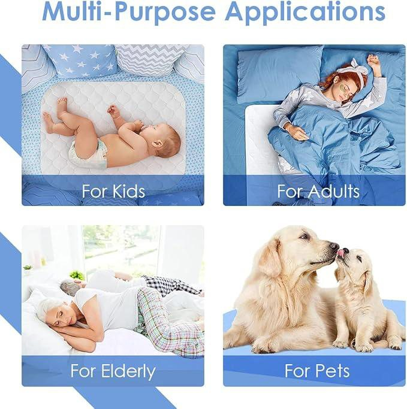
40 39
39Channels we supply
| Hospitals | General wards; handle and Care-Pro 95 builds for 95 °C laundry |
|---|---|
| Care homes | Tuck-in and handle styles, bulk packed, colour-coded |
| Home care retail | Pharmacies, medical supply stores, Amazon sellers |
| Baby & kids | Changing mats, crib and bedwetting pads |
| Pets | Crate, sofa and car pads; Paw Guard build |
| Furniture & travel | Sofa, wheelchair, car seat and car trunk |
What you can customise, and the terms
58 98
98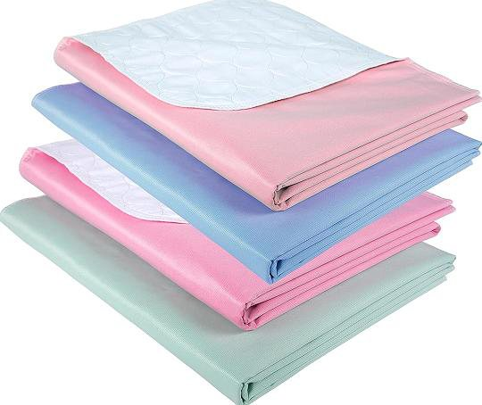
99Ready for your brand
| Size | 19 standard sizes or any size |
|---|---|
| Fabric | Brushed polyester, cotton, bamboo, terry, loop-pile, recycled polyester (GRS) |
| Barrier | TPU or PVC |
| Colour & print | 8 stock colours, printed designs, any Pantone colour |
| Quilting | 12 patterns or a custom logo quilt |
| Branding | Woven label, printed care label, hang tag |
| Packaging | Polybag, header card, colour box, FBA labels, export carton |
| MOQ | Stock colours from 500 pcs per size; custom from 1,000 pcs per SKU |
| Lead time | Typically 25–35 days after approval |
| Payment | 100% T/T, or 50% deposit and 50% before shipment |
| Shipping | FOB / CIF / DDP; FBA-ready cartons |
Why buyers return underpads, and what we do about it
Public reviews of washable underpads tend to complain about the same handful of things. Each one maps to an engineering choice we control.
| Frequent complaint | Root cause | VELCURA response |
|---|---|---|
| "Leaked after a few washes" | Thin PU coating cracks under heat | Laminated TPU membrane, verified by a hydrostatic test after 50 / 100 / 300 washes |
| "Slides around the bed" | Slippery polyester backing | Silicone-dot anti-slip backing or tuck-in wings |
| "Shrank / smaller than listed" | Unstabilised fabrics | Pre-shrunk fabrics, ≤3% dimensional change target, size tolerance printed on spec |
| "Crinkly and hot" | Non-breathable barrier | Breathable, quiet TPU barrier |
| "Edges frayed, filling bunched" | Wide quilt spacing, weak binding | Dense wave quilting plus a double-stitched bias binding |
| "Pack count wrong" | Packing errors | Weight check on every carton, AQL 2.5 final inspection |
From enquiry to delivery
Brief
Market, styles, sizes, quantities and target price.
Quotation
Spec sheet and price ladder within one business day.
Production
Typically 25–35 days, with in-line QC and final inspection.
Shipment
FOB / CIF / DDP, FBA-ready cartons.
 11
11Buyers often ask
What is the fundamental difference from disposable underpads?
A washable underpad can be machine-washed 300+ times, so its total cost per use is about 73% lower than a disposable pad, including laundry costs. The more fundamental difference is protection: it does not shift and does not leak at the edges, so it keeps the mattress from being soiled or even ruined. That makes the overall value higher still.
How many washes does a VELCURA underpad last?
The standard construction is engineered and tested for 300 home-laundry cycles (ISO 6330 procedure) while retaining waterproofing. Institutional builds rated for 95 °C laundering are available.
What is your MOQ for private label?
Stock colours start from 500 pieces per size. Custom fabrics, colours or printed logos typically start from 1,000 pieces per SKU. Final MOQ is confirmed on your quotation.
Can you supply Amazon FBA-ready packaging?
Yes. We print FNSKU labels, suffocation warnings and carton labels to Amazon specifications, and can ship to FBA warehouses in the US, EU and Japan through your forwarder.
Ready to build your washable underpad line?
Tell us your market, sizes and quantities. We reply with a spec sheet and price ladder within one business day.